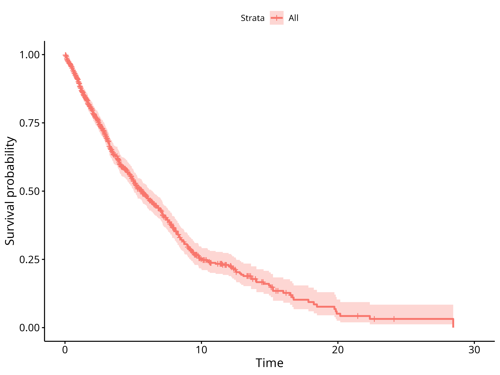

real_world_PFS.RmdThe background section gives some general context on using real-world Progression-free Survival as endpoint in oncology - if you just want to know about using the RwPFS package feel free to skip ahead to Getting started with RwPFS
For a detailed discussion of the rwPFS endpoint see Mhatre (2021)
Progression-free Survival (PFS) is a commonly used time-to event endpoint in cancer trials. It is defined as the first event of either death or progression.
An important difference between the PFS and Overall Survival (OS, time to death) endpoints is that PFS requires close follow-up of patients, whereas OS does not. This is because death is a one-time event, and whenever a patient is contacted alive, we know that death had not occurred previously. This is not the case when looking at progression, hence patients must be closely monitored.
The mechanisms of data-collection differ between real-world data & clinical trials (Mhatre 2021):
In clinical trials, tumor assessments are scheduled at regular intervals, and progression is assessed using standardized criteria. The reason for collecting PFS data in clinical trials is to measure treatment efficacy. Transparency and consistency of the data collection process are emphasized.
In routine health care, there is commonly no protocol and no regularly scheduled tumor assessments. Progression may or may not be assessed following standard criteria - this is generally not known. Physicians may measure progression mainly in order to make treatment decisions, not to statistically compare the effectiveness of different treatments. In addition, transparency and consistency of data collection are likely to be less important objectives than cost considerations or minimization of discomfort for the patient (e.g. by avoiding unnecessary scans).
Because of these differences, it appears sensible to speak of “real-world PFS” (rwPFS) and to treat it as a separate endpoint, distinct from trial PFS. However, due to the highly similar definitions of rwPFS and PFS, it is possible that the two endpoints may be equivalent, meaning they essentially lead to the same result and could be used to compare effectivness of treatments both within a particular real-world data source as well as between trial and real-world data.
Whether or not PFS and rwPFS endpoints are equivalent and can be used for comparing drug efficacy across two data sets (real-world and clinical trial) may depend on type of cancer, drug category, real-world database, and other factors. While attempts should be made to understand and ensure quality of data collection in the real-world data, this will likely never be perfect. Consequently, empirical confirmation of the equivalence of rwPFS and PFS will be needed. This can be done by replicating trial arms and comparing rwPFS and trial PFS outcomes (Mhatre 2021; Ton 2021), across indications and drug categories.
Figure 1 in Mhatre (2021) illustrates the important elements required for calculating a rwPFS endpoint:
the start date (baseline)
the date up to which progression was abstracted from clinical notes
the dates of any progression events of interest
the date of death, if present
the date of a patient’s last structured activity in the database
the presence of potential visit gaps (not shown), indicating that the patient may not have been followed for progression due to prolonged absence from the clinic (e.g. >90d).
a time window after the end of progression follow-up where death events are to be captured. This is required to avoid informative censoring because it is not uncommon that data on progression ceases to be collected shortly before death of a patient. If the time window is too small, there will almost exclusively be progression events. If the window is too large, more deaths are captured, but at the same time the risk of missing any progression events increases. Therefore, a pragmatic choice will have to be made. More on this point later.
The RwPFS package uses the algorithm below to calucate rwPFS endpoints.
A general algorithm for calculation of rwPFS consists of the following steps:
Determine the period of continuous progression follow-up.
It begins at baseline and ends at one of the following, whichever occurs first:
the start of a long gap between visits (e.g. >90d)
the date of last progression abstraction
the date of last structured activity in the database
Determine the type of rwPFS event, in this order:
“Progression,” if an event occurs during the follow-up period
“Death,” if it occurs within the specified time window after end of follow-up
“Censoring” otherwise
Create rwPFS variables
record a rwPFS event in case of death or progression event types
otherwise, censor the patient at the end of progression follow-up
calculate the time from baseline to event or censoring
Multiple possible definitions of rwPFS can be specified based on the elements mentioned above:
different subsets of progression events could be used, e.g. only radiographically confirmed progression events, or only progression events that occur more than 14 days after baseline
different possibilities exist to handle changes in the line of therapy (LoT): one could either
follow the patient for progression into a subsequent LoT if no progression has occurred, or..
censor the patient at the start of a subsequent LoT, or..
impute a progression event at the start of a subsequent LoT (following the clinical logic that LoT is anchored to progression)
different choices are possible for the length of the time window to capture death events
the aim is to capture most of - and only - the death events correlated in time with the end of follow-up.
this is reminiscent of informative censoring - except in this case events occurring after the end of follow-up can be accessed and potentially included.
reasonable values for the length of the time window can be argued based on comparison with data collection in trials, or - in a data-driven way by inspecting the drop in the number of death events as the window is being extended (see best practices below). For a detailed discussion see Mhatre (2021)
ultimately, any choice will remain arbitrary to some extent.
it seems reasonable to ensure gapless progression follow-up, but the choice of a maximally tolerable gap length between visits remains arbitrary. A commonly used value is 90 days, however, without a very strong rationale.
As outlined above, there is a range of possible definitions of rwPFS. To determine which of these are most closely mimicking clinical trial PFS requires discussions with subject matter experts, and it is possible that different conclusions may be reached depending on indication, drug category, analysis objective, or other factors. From our experience in aNSCLC (Mhatre 2021; Ton 2021) several definitions - not only one - remain viable options even after discussion with experts, and eventually a pragmatic choice must be made. Despite a desire for standardization, we reached the conclusion that defining a single standard is not helpful given the current state of knowledge, and that instead we should promote best practices that support the emergence of - preferably rather few - standard definitions via publications in the scientific literature.
To promote the emergence of standard rwPFS definitions and comparability across analyses we propose the following best practices:
Proposed best practices when using rwPFS
Check if there is already a commonly used rwPFS definition in analyses similar to yours.
Discuss sensible rwPFS definitions with subject matter experts.
If there is already a commonly used rwPFS definition that passes the expert test, try to use it.
If you have reasons to use a different definition, do so and try to explain your choice
Be transparent about the exact definition you’re using
Explore a range of sensible alternative definitions and report key descriptors to show how rwPFS definition affects the conclusions of the analysis
To start, we will add a rwPFS variable to a simulated dataset. For simplicity, we will use the rwPFS definition used in Mhatre (2021) and Ton (2021):
Use all progression events except where “pseudoprogression mentioned” (not only events based on radiographic evidence, and we don’t discard progression events occurring within 2 weeks after baseline)
Follow patients for progression into subsequent lines of treatment (do not censor them at start of new line, do not impute progression at line change)
Include death events occurring <30d after end of progression follow-up
Censor individuals if there is a visit gap > 90 days during follow-up
Use the first progression event when there are several
Load the required libraries
The RwPFS package contains simprog, a simulated dataset with progression information and other variables required to compute a rwPFS endpoint:
simprog %>%
glimpse()
#> Rows: 1,000
#> Columns: 10
#> $ patientid <int> 1, 2, 3, 4, 5, 6, 7, 8, 9, 10, 1…
#> $ baseline_date <date> 2010-01-01, 2010-01-01, 2010-01…
#> $ last_activity_date <date> 2010-08-29, 2011-07-14, 2012-04…
#> $ death_date <date> 2010-11-19, NA, 2012-05-15, 201…
#> $ visit_gap_start_date <date> 2010-04-07, NA, NA, NA, NA, NA,…
#> $ last_progression_abstraction_date <date> 2010-08-29, 2010-10-05, 2010-10…
#> $ progression_date_all_events <date> 2010-01-27, NA, 2010-08-24, 201…
#> $ progression_date_discard_le_14d <date> 2010-01-27, NA, 2010-08-24, 201…
#> $ progression_date_radiographic_only <date> 2010-01-27, NA, 2010-08-24, 201…
#> $ progression_date_no_pseudoprogression <date> 2010-01-27, NA, 2010-08-24, 201…The patientid, baseline_date, last_activity_date & death_date columns are self-explanatory. visit_gap_start_date indicates the date of the last visit before a longer gap in visits (e.g. 90 days) and is NA if no such gap occurs. The date up to which progression information is available for a particular patient is indicated in last_progression_abstraction_date. Lastly, there are a number of columns indicating the date of progression, with all except progression_date_all_events considering only a specific subset of progression events - we’ll talk about that later.
For a start, we’ll keep things simple and use the progression_date_all_events variable, discarding the other progression date columns. A call to calc_rwPFS, mapping column names in our particular dataset to the function arguments, will add PFS-related variables to the data:
df <- simprog %>%
calc_rwPFS(
.start_date = "baseline_date", #baseline date for measuring time-to-event
.visit_gap_start_date = "visit_gap_start_date", #the start date of any gap in visits >90 days
.last_progression_abstraction_date = "last_progression_abstraction_date",
.progression_date = "progression_date_all_events",#the date of progression (none: NA)
.last_activity_date = "last_activity_date", #the date of last activity in the database
.death_date = "death_date", #the date of death
.death_window_days = 30, #include death events <30d after progression EOF
.max_follow_up_days = Inf, #censor patients after a maximum time.
.label = "_all_events" #Label for this rwPFS endpoint (for comparisons)
)This added the following additional columns to the dataset:
df %>%
select(contains("rwPFS")) %>%
glimpse()
#> Rows: 1,000
#> Columns: 6
#> $ rwPFS_all_events_eof_date <date> 2010-04-07, 2010-10-05, 2010-10-16, 2010-…
#> $ rwPFS_all_events_event_type <chr> "Progression", "Censored", "Progression", …
#> $ rwPFS_all_events_date <date> 2010-01-27, 2010-10-05, 2010-08-24, 2010-…
#> $ rwPFS_all_events_days <dbl> 26, 277, 235, 30, 31, 69, 96, 105, 30, 122…
#> $ rwPFS_all_events_event <dbl> 1, 0, 1, 1, 0, 1, 1, 1, 1, 1, 0, 1, 0, 1, …
#> $ rwPFS_all_events_months <dbl> 0.8542094, 9.1006160, 7.7207392, 0.9856263…The names of these columns are composed of “rwPFS” followed by the label specified in the call to calc_rwPFS, followed by the type of variable: eof_date marking the end of the period of continuous progression follow-up, the type & date of the rwPFS event, as well as the event (or censoring) & time to event variables (in days or months).
Let’s plot the Kaplan-Meier curve for rwPFS
surv_fit(Surv(rwPFS_all_events_months, rwPFS_all_events_event) ~ 1, data = df) %>%
ggsurvplot(data = df) 
This doesn’t look too bad… congratulations, you’ve mastered the basics of using the RwPFS package!
As mentioned before, there is more than one way of defining rwPFS. Often, the differences between definitions will be small, yet for the sake of scientific rigor it would be great to verify how large these differences are.. conducting a full sensitivity analysis for each and every rwPFS definition, however, seems overkill.. so what do we do?
Ideally, we’d have a concise summary table, where readers could verify at one glance what the impact of varying the endpoint definition would be. This is what we’ll do next..
First, let’s calculate additional rwPFS endpoints, across a range of “reasonable” definitions:
discard_le_14d where all progression events within 14 days of baseline are discarded
radiographic_only where only radiographically confirmed progression events are considered
no_pseudoprogression where so-called “pseudo-progression” events are discarded
df <- simprog %>%
#Start with the "_all_events" rwPFS endpoint, as in the simple example above
calc_rwPFS(
.start_date = "baseline_date", #baseline date for measuring time-to-event
.visit_gap_start_date = "visit_gap_start_date", #the start date of any gap in visits >90 days
.last_progression_abstraction_date = "last_progression_abstraction_date",
.progression_date = "progression_date_all_events",#the date of progression (none: NA)
.last_activity_date = "last_activity_date", #the date of last activity in the database
.death_date = "death_date", #the date of death
.death_window_days = 30, #include death events <30d after progression EOF
.max_follow_up_days = Inf, #censor patients after a maximum time.
.label = "_all_events" #Label for this rwPFS endpoint (for comparisons)
) %>%
# Add "discard_le_14d" rwPFS
calc_rwPFS(
.start_date = "baseline_date", #baseline date for measuring time-to-event
.visit_gap_start_date = "visit_gap_start_date", #the start date of any gap in visits >90 days
.last_progression_abstraction_date = "last_progression_abstraction_date",
.progression_date = "progression_date_discard_le_14d",
.last_activity_date = "last_activity_date", #the date of last activity in the database
.death_date = "death_date", #the date of death
.death_window_days = 30, #include death events <30d after progression EOF
.max_follow_up_days = Inf, #censor patients after a maximum time.
.label = "_discard_le_14d" #Label for this rwPFS endpoint (for comparisons)
) %>%
# Add "radiographic_only" rwPFS
calc_rwPFS(
.start_date = "baseline_date", #baseline date for measuring time-to-event
.visit_gap_start_date = "visit_gap_start_date", #the start date of any gap in visits >90 days
.last_progression_abstraction_date = "last_progression_abstraction_date",
.progression_date = "progression_date_no_pseudoprogression",
.last_activity_date = "last_activity_date", #the date of last activity in the database
.death_date = "death_date", #the date of death
.death_window_days = 30, #include death events <30d after progression EOF
.max_follow_up_days = Inf, #censor patients after a maximum time.
.label = "_radiographic_only" #Label for this rwPFS endpoint (for comparisons)
) %>%
# Add "no_pseudoprogression" rwPFS
calc_rwPFS(
.start_date = "baseline_date", #baseline date for measuring time-to-event
.visit_gap_start_date = "visit_gap_start_date", #the start date of any gap in visits >90 days
.last_progression_abstraction_date = "last_progression_abstraction_date",
.progression_date = "progression_date_radiographic_only",
.last_activity_date = "last_activity_date", #the date of last activity in the database
.death_date = "death_date", #the date of death
.death_window_days = 30, #include death events <30d after progression EOF
.max_follow_up_days = Inf, #censor patients after a maximum time.
.label = "_no_pseudoprogression" #Label for this rwPFS endpoint (for comparisons)
) We also want to look at rwPFS definitions where we don’t consider visit gaps. This can be done by supplying an all_na date column to calc_rwPFS as the column containing the dates of visit gaps:
df <- df %>%
mutate(
#adding an all_na column
all_na = NA_character_ %>% as.Date()
) %>%
# Add "ignore_visit_gaps" rwPFS
calc_rwPFS(
.start_date = "baseline_date", #baseline date for measuring time-to-event
.visit_gap_start_date = "all_na", #the start date of any gap in visits >90 days
.last_progression_abstraction_date = "last_progression_abstraction_date",
.progression_date = "progression_date_all_events",
.last_activity_date = "last_activity_date", #the date of last activity in the database
.death_date = "death_date", #the date of death
.death_window_days = 30, #include death events <30d after progression EOF
.max_follow_up_days = Inf, #censor patients after a maximum time.
.label = "_ignore_visit_gaps" #Label for this rwPFS endpoint (for comparisons)
)
On a side note, supplying a custom date column as .visit_gap_start_date can e.g. be used to trick calc_rwPFS into censoring observations early (e.g. at a change of the line of therapy). Similarly, progression events can be imputed (e.g. at a line of therapy change) by creating a custom .progression_date column.
Now we have a dataset that contains variables for all the different rwPFS endpoints we’ve defined, using the labels as in-fixes in the variable names:
df %>%
select(contains("rwPFS")) %>%
glimpse()
#> Rows: 1,000
#> Columns: 30
#> $ rwPFS_all_events_eof_date <date> 2010-04-07, 2010-10-05, 2010-10…
#> $ rwPFS_all_events_event_type <chr> "Progression", "Censored", "Prog…
#> $ rwPFS_all_events_date <date> 2010-01-27, 2010-10-05, 2010-08…
#> $ rwPFS_all_events_days <dbl> 26, 277, 235, 30, 31, 69, 96, 10…
#> $ rwPFS_all_events_event <dbl> 1, 0, 1, 1, 0, 1, 1, 1, 1, 1, 0,…
#> $ rwPFS_all_events_months <dbl> 0.8542094, 9.1006160, 7.7207392,…
#> $ rwPFS_discard_le_14d_eof_date <date> 2010-04-07, 2010-10-05, 2010-10…
#> $ rwPFS_discard_le_14d_event_type <chr> "Progression", "Censored", "Prog…
#> $ rwPFS_discard_le_14d_date <date> 2010-01-27, 2010-10-05, 2010-08…
#> $ rwPFS_discard_le_14d_days <dbl> 26, 277, 235, 30, 31, 69, 96, 10…
#> $ rwPFS_discard_le_14d_event <dbl> 1, 0, 1, 1, 0, 1, 1, 1, 1, 1, 0,…
#> $ rwPFS_discard_le_14d_months <dbl> 0.8542094, 9.1006160, 7.7207392,…
#> $ rwPFS_radiographic_only_eof_date <date> 2010-04-07, 2010-10-05, 2010-10…
#> $ rwPFS_radiographic_only_event_type <chr> "Progression", "Censored", "Prog…
#> $ rwPFS_radiographic_only_date <date> 2010-01-27, 2010-10-05, 2010-08…
#> $ rwPFS_radiographic_only_days <dbl> 26, 277, 235, 30, 31, 69, 96, 10…
#> $ rwPFS_radiographic_only_event <dbl> 1, 0, 1, 1, 0, 1, 1, 1, 1, 1, 0,…
#> $ rwPFS_radiographic_only_months <dbl> 0.8542094, 9.1006160, 7.7207392,…
#> $ rwPFS_no_pseudoprogression_eof_date <date> 2010-04-07, 2010-10-05, 2010-10…
#> $ rwPFS_no_pseudoprogression_event_type <chr> "Progression", "Censored", "Prog…
#> $ rwPFS_no_pseudoprogression_date <date> 2010-01-27, 2010-10-05, 2010-08…
#> $ rwPFS_no_pseudoprogression_days <dbl> 26, 277, 235, 30, 31, 69, 173, 1…
#> $ rwPFS_no_pseudoprogression_event <dbl> 1, 0, 1, 1, 0, 1, 0, 1, 1, 1, 0,…
#> $ rwPFS_no_pseudoprogression_months <dbl> 0.8542094, 9.1006160, 7.7207392,…
#> $ rwPFS_ignore_visit_gaps_eof_date <date> 2010-08-29, 2010-10-05, 2010-10…
#> $ rwPFS_ignore_visit_gaps_event_type <chr> "Progression", "Censored", "Prog…
#> $ rwPFS_ignore_visit_gaps_date <date> 2010-01-27, 2010-10-05, 2010-08…
#> $ rwPFS_ignore_visit_gaps_days <dbl> 26, 277, 235, 30, 31, 69, 96, 10…
#> $ rwPFS_ignore_visit_gaps_event <dbl> 1, 0, 1, 1, 0, 1, 1, 1, 1, 1, 0,…
#> $ rwPFS_ignore_visit_gaps_months <dbl> 0.8542094, 9.1006160, 7.7207392,…Let’s compare these different rwPFS endpoints using compare_rwPFS to see if rwPFS outcomes are sensitive to the exact endpoint definition:
df %>%
compare_rwPFS(
.labels = c( #Specify the rwPFS labels to be tabulated (in the desired order)
"_all_events",
"_discard_le_14d",
"_radiographic_only",
"_no_pseudoprogression",
"_ignore_visit_gaps"
),
.reference = "_all_events",
.incremental_deaths_column = FALSE
) %>%
kable()
#> Warning in compare_rwPFS(., .labels = c("_all_events", "_discard_le_14d", : 8
#> Patients with missing rwPFS were found and removed
#> Warning: `select_()` was deprecated in dplyr 0.7.0.
#> Please use `select()` instead.
#> This warning is displayed once every 8 hours.
#> Call `lifecycle::last_lifecycle_warnings()` to see where this warning was generated.| rwPFS definition | Censoring | Progression | Death | Percent death | KM median | Hazard ratio |
|---|---|---|---|---|---|---|
| All events | 474 | 345 | 173 | 33.4 | 5.65 (5.06-6.41) | 1 (reference) |
| Discard le 14d | 500 | 313 | 179 | 36.4 | 6.05 (5.32-6.93) | 0.91 (0.81-1.04) |
| Radiographic only | 475 | 343 | 174 | 33.7 | 5.68 (5.06-6.47) | 0.99 (0.88-1.12) |
| No pseudoprogression | 489 | 328 | 175 | 34.8 | 6.01 (5.29-6.74) | 0.95 (0.84-1.07) |
| Ignore visit gaps | 448 | 365 | 179 | 32.9 | 5.65 (5.06-6.34) | 1 (0.88-1.12) |
The obtained table gives an overview across the rwPFS definitions we’re considering. It compares the no. of censoring-, progression- and death events, as well as the percentage of rwPFS events (death and progression combined) that are death.
Kaplan-Meier median and hazard ratio relative to the reference definition give an impression of how big the impact on corresponding analysis outcomes would be. Note that to obtain the hazard ratio, a cox regression was fitted to data of twice the same patients but with different endpoints. Since the Cox model assumes the data from two compared groups to be independent, this is a bit of a stretch. The HR should therefore cautiously be interpreted as a crude indication of expected impact on any HR analyses, in order to avoid doing full senstivity analyses with all rwPFS definitions.
Jointly, these outputs allow a discussion of the potential impact of varying the rwPFS definition on rwPFS outcomes. In the present case, however, the underlying data are fabricated, hence such a discussion would not be very insightful. For a real-life example of using compare_rwPFS please refer to Mhatre (2021).
Maybe you noticed: when calling compare_rwPFS there was a warning about 8 patients having missing rwPFS. These are usually introduced by calc_rwPFS for good reasons: either if any of the required input dates are missing, if the order of dates does not make sense (e.g. death date before baseline, perhaps due to coarse granularity of death date information), etc.
A quick check reveals that indeed the patients with (any type of) missing rwPFS have either zero days follow-up, or a progression event exactly at baseline. It’s generally a good idea to hand-check patients where the rwPFS event is of type “missing,” as this is what calc_rwPFS generates if the input data do not allow calculation of an rwPFS endpoint.
| patientid | baseline_date | last_activity_date | death_date | visit_gap_start_date | last_progression_abstraction_date | progression_date_all_events | progression_date_discard_le_14d | progression_date_radiographic_only | progression_date_no_pseudoprogression | rwPFS_all_events_eof_date | rwPFS_all_events_event_type | rwPFS_all_events_date | rwPFS_all_events_days | rwPFS_all_events_event | rwPFS_all_events_months | rwPFS_discard_le_14d_eof_date | rwPFS_discard_le_14d_event_type | rwPFS_discard_le_14d_date | rwPFS_discard_le_14d_days | rwPFS_discard_le_14d_event | rwPFS_discard_le_14d_months | rwPFS_radiographic_only_eof_date | rwPFS_radiographic_only_event_type | rwPFS_radiographic_only_date | rwPFS_radiographic_only_days | rwPFS_radiographic_only_event | rwPFS_radiographic_only_months | rwPFS_no_pseudoprogression_eof_date | rwPFS_no_pseudoprogression_event_type | rwPFS_no_pseudoprogression_date | rwPFS_no_pseudoprogression_days | rwPFS_no_pseudoprogression_event | rwPFS_no_pseudoprogression_months | all_na | rwPFS_ignore_visit_gaps_eof_date | rwPFS_ignore_visit_gaps_event_type | rwPFS_ignore_visit_gaps_date | rwPFS_ignore_visit_gaps_days | rwPFS_ignore_visit_gaps_event | rwPFS_ignore_visit_gaps_months |
|---|---|---|---|---|---|---|---|---|---|---|---|---|---|---|---|---|---|---|---|---|---|---|---|---|---|---|---|---|---|---|---|---|---|---|---|---|---|---|---|---|
| 15 | 2010-01-01 | 2010-08-22 | 2010-09-16 | NA | 2010-01-01 | NA | NA | NA | NA | 2010-01-01 | Missing | NA | NA | NA | NA | 2010-01-01 | Missing | NA | NA | NA | NA | 2010-01-01 | Missing | NA | NA | NA | NA | 2010-01-01 | Missing | NA | NA | NA | NA | NA | 2010-01-01 | Missing | NA | NA | NA | NA |
| 461 | 2010-01-01 | 2010-01-01 | NA | NA | 2010-01-01 | NA | NA | NA | NA | 2010-01-01 | Missing | NA | NA | NA | NA | 2010-01-01 | Missing | NA | NA | NA | NA | 2010-01-01 | Missing | NA | NA | NA | NA | 2010-01-01 | Missing | NA | NA | NA | NA | NA | 2010-01-01 | Missing | NA | NA | NA | NA |
| 480 | 2010-01-01 | 2012-03-27 | NA | 2010-01-01 | 2010-03-26 | NA | NA | NA | NA | 2010-01-01 | Missing | NA | NA | NA | NA | 2010-01-01 | Missing | NA | NA | NA | NA | 2010-01-01 | Missing | NA | NA | NA | NA | 2010-01-01 | Missing | NA | NA | NA | NA | NA | 2010-03-26 | Censored | 2010-03-26 | 84 | 0 | 2.759754 |
| 538 | 2010-01-01 | 2011-02-19 | 2011-04-11 | NA | 2010-01-27 | 2010-01-01 | NA | 2010-01-01 | 2010-01-01 | 2010-01-27 | Missing | NA | NA | NA | NA | 2010-01-27 | Censored | 2010-01-27 | 26 | 0 | 0.8542094 | 2010-01-27 | Missing | NA | NA | NA | NA | 2010-01-27 | Missing | NA | NA | NA | NA | NA | 2010-01-27 | Missing | NA | NA | NA | NA |
| 630 | 2010-01-01 | 2010-01-01 | NA | NA | 2010-01-01 | NA | NA | NA | NA | 2010-01-01 | Missing | NA | NA | NA | NA | 2010-01-01 | Missing | NA | NA | NA | NA | 2010-01-01 | Missing | NA | NA | NA | NA | 2010-01-01 | Missing | NA | NA | NA | NA | NA | 2010-01-01 | Missing | NA | NA | NA | NA |
| 666 | 2010-01-01 | 2010-07-10 | 2010-08-30 | NA | 2010-07-10 | 2010-01-01 | NA | 2010-01-01 | 2010-01-01 | 2010-07-10 | Missing | NA | NA | NA | NA | 2010-07-10 | Censored | 2010-07-10 | 190 | 0 | 6.2422998 | 2010-07-10 | Missing | NA | NA | NA | NA | 2010-07-10 | Missing | NA | NA | NA | NA | NA | 2010-07-10 | Missing | NA | NA | NA | NA |
| 802 | 2010-01-01 | 2010-01-18 | 2010-01-23 | NA | 2010-01-18 | 2010-01-01 | NA | 2010-01-01 | 2010-01-01 | 2010-01-18 | Missing | NA | NA | NA | NA | 2010-01-18 | Death | 2010-01-23 | 22 | 1 | 0.7227926 | 2010-01-18 | Missing | NA | NA | NA | NA | 2010-01-18 | Missing | NA | NA | NA | NA | NA | 2010-01-18 | Missing | NA | NA | NA | NA |
| 867 | 2010-01-01 | 2010-06-17 | 2010-07-12 | NA | 2010-04-21 | 2010-01-01 | NA | 2010-01-01 | 2010-01-01 | 2010-04-21 | Missing | NA | NA | NA | NA | 2010-04-21 | Censored | 2010-04-21 | 110 | 0 | 3.6139630 | 2010-04-21 | Missing | NA | NA | NA | NA | 2010-04-21 | Missing | NA | NA | NA | NA | NA | 2010-04-21 | Missing | NA | NA | NA | NA |
A remaining question is how long the time window for capturing deaths should be after the end of progression follow-up. We’ve chosen 30 days above, as discussed in Mhatre (2021) and Ton (2021), but without a very strong rationale.
There may not be one single “right” value for the size of this window. However, one way of verifying if a given value is sensible is to vary the length of this window and check how many additional deaths are captured when extending it. The idea here is that we want to capture most of the deaths that are correlated with the end of progression follow-up, meaning they happen shortly after. In addition, we want to keep the window as small as possible to minimize the risk of missing progression events happening during this period. A pragmatic choice may be made that reconciles these opposing objectives as well as possible.
We can calculate rwPFS endpoints with varying window lengths as follows:
df <- simprog %>%
#Start with the "_all_events" rwPFS endpoint, as in the simple example above
calc_rwPFS(
.start_date = "baseline_date", #baseline date for measuring time-to-event
.visit_gap_start_date = "visit_gap_start_date", #the start date of any gap in visits >90 days
.last_progression_abstraction_date = "last_progression_abstraction_date",
.progression_date = "progression_date_all_events",#the date of progression (none: NA)
.last_activity_date = "last_activity_date", #the date of last activity in the database
.death_date = "death_date", #the date of death
.death_window_days = 0, #include death events <30d after progression EOF
.max_follow_up_days = Inf, #censor patients after a maximum time.
.label = "_0d_window" #Label for this rwPFS endpoint (for comparisons)
) %>%
calc_rwPFS(
.start_date = "baseline_date", #baseline date for measuring time-to-event
.visit_gap_start_date = "visit_gap_start_date", #the start date of any gap in visits >90 days
.last_progression_abstraction_date = "last_progression_abstraction_date",
.progression_date = "progression_date_all_events",#the date of progression (none: NA)
.last_activity_date = "last_activity_date", #the date of last activity in the database
.death_date = "death_date", #the date of death
.death_window_days = 10, #include death events <30d after progression EOF
.max_follow_up_days = Inf, #censor patients after a maximum time.
.label = "_10d_window" #Label for this rwPFS endpoint (for comparisons)
) %>%
calc_rwPFS(
.start_date = "baseline_date", #baseline date for measuring time-to-event
.visit_gap_start_date = "visit_gap_start_date", #the start date of any gap in visits >90 days
.last_progression_abstraction_date = "last_progression_abstraction_date",
.progression_date = "progression_date_all_events",#the date of progression (none: NA)
.last_activity_date = "last_activity_date", #the date of last activity in the database
.death_date = "death_date", #the date of death
.death_window_days = 20, #include death events <30d after progression EOF
.max_follow_up_days = Inf, #censor patients after a maximum time.
.label = "_20d_window" #Label for this rwPFS endpoint (for comparisons)
) %>%
calc_rwPFS(
.start_date = "baseline_date", #baseline date for measuring time-to-event
.visit_gap_start_date = "visit_gap_start_date", #the start date of any gap in visits >90 days
.last_progression_abstraction_date = "last_progression_abstraction_date",
.progression_date = "progression_date_all_events",#the date of progression (none: NA)
.last_activity_date = "last_activity_date", #the date of last activity in the database
.death_date = "death_date", #the date of death
.death_window_days = 30, #include death events <30d after progression EOF
.max_follow_up_days = Inf, #censor patients after a maximum time.
.label = "_30d_window" #Label for this rwPFS endpoint (for comparisons)
) %>%
calc_rwPFS(
.start_date = "baseline_date", #baseline date for measuring time-to-event
.visit_gap_start_date = "visit_gap_start_date", #the start date of any gap in visits >90 days
.last_progression_abstraction_date = "last_progression_abstraction_date",
.progression_date = "progression_date_all_events",#the date of progression (none: NA)
.last_activity_date = "last_activity_date", #the date of last activity in the database
.death_date = "death_date", #the date of death
.death_window_days = 40, #include death events <30d after progression EOF
.max_follow_up_days = Inf, #censor patients after a maximum time.
.label = "_40d_window" #Label for this rwPFS endpoint (for comparisons)
) %>%
calc_rwPFS(
.start_date = "baseline_date", #baseline date for measuring time-to-event
.visit_gap_start_date = "visit_gap_start_date", #the start date of any gap in visits >90 days
.last_progression_abstraction_date = "last_progression_abstraction_date",
.progression_date = "progression_date_all_events",#the date of progression (none: NA)
.last_activity_date = "last_activity_date", #the date of last activity in the database
.death_date = "death_date", #the date of death
.death_window_days = 50, #include death events <30d after progression EOF
.max_follow_up_days = Inf, #censor patients after a maximum time.
.label = "_50d_window" #Label for this rwPFS endpoint (for comparisons)
) %>%
calc_rwPFS(
.start_date = "baseline_date", #baseline date for measuring time-to-event
.visit_gap_start_date = "visit_gap_start_date", #the start date of any gap in visits >90 days
.last_progression_abstraction_date = "last_progression_abstraction_date",
.progression_date = "progression_date_all_events",#the date of progression (none: NA)
.last_activity_date = "last_activity_date", #the date of last activity in the database
.death_date = "death_date", #the date of death
.death_window_days = 60, #include death events <30d after progression EOF
.max_follow_up_days = Inf, #censor patients after a maximum time.
.label = "_60d_window" #Label for this rwPFS endpoint (for comparisons)
) %>%
calc_rwPFS(
.start_date = "baseline_date", #baseline date for measuring time-to-event
.visit_gap_start_date = "visit_gap_start_date", #the start date of any gap in visits >90 days
.last_progression_abstraction_date = "last_progression_abstraction_date",
.progression_date = "progression_date_all_events",#the date of progression (none: NA)
.last_activity_date = "last_activity_date", #the date of last activity in the database
.death_date = "death_date", #the date of death
.death_window_days = 70, #include death events <30d after progression EOF
.max_follow_up_days = Inf, #censor patients after a maximum time.
.label = "_70d_window" #Label for this rwPFS endpoint (for comparisons)
) %>%
calc_rwPFS(
.start_date = "baseline_date", #baseline date for measuring time-to-event
.visit_gap_start_date = "visit_gap_start_date", #the start date of any gap in visits >90 days
.last_progression_abstraction_date = "last_progression_abstraction_date",
.progression_date = "progression_date_all_events",#the date of progression (none: NA)
.last_activity_date = "last_activity_date", #the date of last activity in the database
.death_date = "death_date", #the date of death
.death_window_days = 80, #include death events <30d after progression EOF
.max_follow_up_days = Inf, #censor patients after a maximum time.
.label = "_80d_window" #Label for this rwPFS endpoint (for comparisons)
) %>%
calc_rwPFS(
.start_date = "baseline_date", #baseline date for measuring time-to-event
.visit_gap_start_date = "visit_gap_start_date", #the start date of any gap in visits >90 days
.last_progression_abstraction_date = "last_progression_abstraction_date",
.progression_date = "progression_date_all_events",#the date of progression (none: NA)
.last_activity_date = "last_activity_date", #the date of last activity in the database
.death_date = "death_date", #the date of death
.death_window_days = 90, #include death events <30d after progression EOF
.max_follow_up_days = Inf, #censor patients after a maximum time.
.label = "_90d_window" #Label for this rwPFS endpoint (for comparisons)
)
and then compare them like before, but this time adding an ‘incremental deaths’ column to the output, indicating how many additional deaths are captured by extending the window by 10 more days
df %>%
compare_rwPFS(
.labels = paste0("_", 0:9*10, "d_window"),#Specify the rwPFS labels to be tabulated (in the desired order)
.reference = "_30d_window",
.incremental_deaths_column = TRUE
) %>%
kable()
#> Warning in compare_rwPFS(., .labels = paste0("_", 0:9 * 10, "d_window"), : 8
#> Patients with missing rwPFS were found and removed| rwPFS definition | Censoring | Progression | Death | Incremental deaths | Percent death | KM median | Hazard ratio |
|---|---|---|---|---|---|---|---|
| 0d window | 643 | 345 | 4 | NA | 1.1 | 8.15 (7.52-9) | 0.69 (0.6-0.79) |
| 10d window | 576 | 345 | 71 | 67 | 17.1 | 7.16 (6.31-7.98) | 0.82 (0.72-0.93) |
| 20d window | 518 | 345 | 129 | 58 | 27.2 | 6.14 (5.49-7.1) | 0.92 (0.82-1.05) |
| 30d window | 474 | 345 | 173 | 44 | 33.4 | 5.65 (5.06-6.41) | 1 (reference) |
| 40d window | 445 | 345 | 202 | 29 | 36.9 | 5.32 (4.9-6.05) | 1.05 (0.93-1.18) |
| 50d window | 422 | 345 | 225 | 23 | 39.5 | 5.19 (4.8-5.88) | 1.08 (0.96-1.22) |
| 60d window | 408 | 345 | 239 | 14 | 40.9 | 5.06 (4.7-5.68) | 1.1 (0.98-1.24) |
| 70d window | 393 | 345 | 254 | 15 | 42.4 | 5.06 (4.67-5.62) | 1.12 (1-1.26) |
| 80d window | 380 | 345 | 267 | 13 | 43.6 | 5.03 (4.63-5.49) | 1.14 (1.01-1.28) |
| 90d window | 371 | 345 | 276 | 9 | 44.4 | 5.03 (4.63-5.49) | 1.14 (1.02-1.29) |
Similarly as before, we are now able to compare different rwPFS definitions at a glance and examine the impact of extending the time window for capturing death events.
Please note that this is only simulated data and does not really allow for a discussion of this issue. The following is just meant as an illustration, although the pattern found here mirrors quite closely the situation in real patient data as discussed in Mhatre (2021).
From these outputs one could argue for a 30 day time window as follows: first, a time-window of 0 days corresponds to a substantial HR difference compared to the reference (30d window). This indicates that it may indeed be important to capture death events occurring after end of progression follow-up. We can also see, that the effect of extending the window from 30d to 90d changes the HR by comparatively smaller amounts, suggesting that the effect of extending the window further is diminishing rapidly. This is reflected in the ‘Incremental deaths’ column as well: for the each 10-day period up to 30 days we capture approximately between 44 & 67 additional deaths, with this number dropping rapidly thereafter. It is hard to tell where exactly the cutoff should be made - but one could say that 30d to 60d is reasonable since most censoring-related deaths appear to be captured, and further extension has negligible impact on hazard ratios.